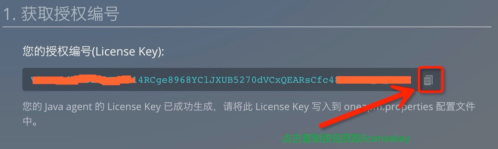
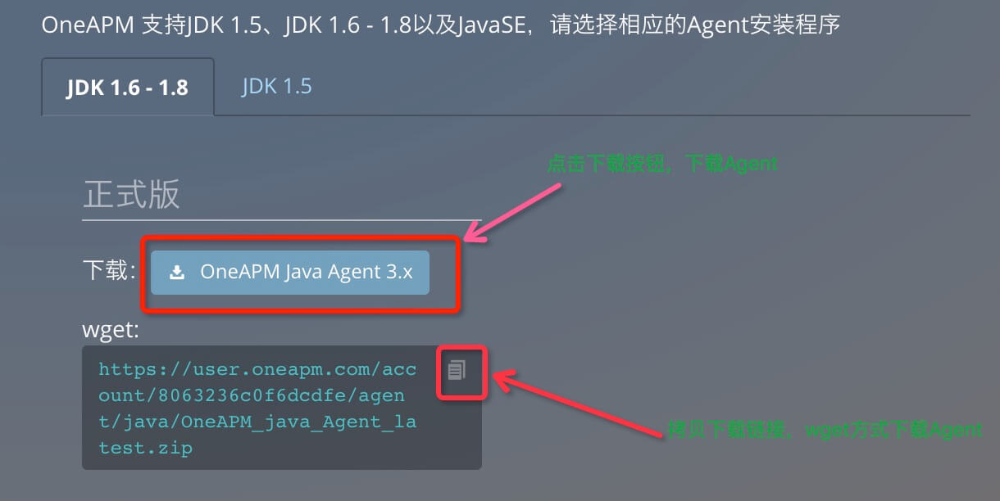
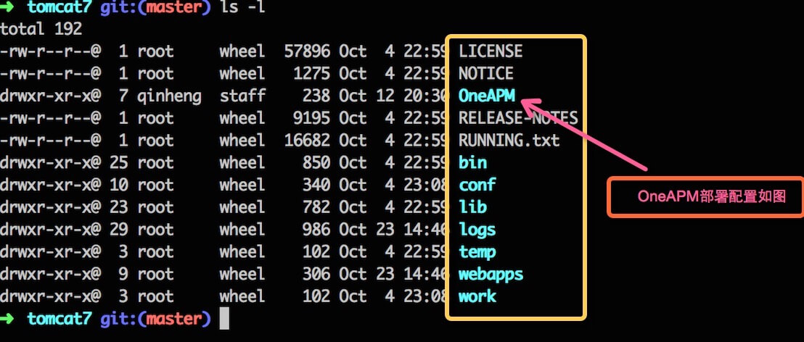

Tomcat安装
1. 获取授权编号
- License Key 获取

2. 下载
下载 Agent 
JDK 1.6 - 1.8 请下载
wget: https://user.oneapm.com/account/5dad74ffe945c060/agent/java/OneAPM_java_Agent_latest.zipJDK 1.5 请下载
wget:https://user.oneapm.com/account/5dad74ffe945c060/agent/java/OneAPM_java_Agent_legacy.zip
3. 安装
解压「Agent」至「Tomcat的根目录」下
unzip OneAPM_java_Agent_latest.zip -d <Application Server Path>/写入「License Key」至配置文件「OneAPM/oneapm.properties」
模板如下：
注意 license_key配置的时候不能有引号
Linux 或 Mac
Linux 或 Mac 
写入「License Key」至配置文件「OneAPM/oneapm.properties」
模板如下：
注意 license_key配置的时候不能有引号
Windows
JBOSS， GlassFish， Jetty， Tomcat 压缩包 解压 OneAPM_java_Agent_x.x.zip
复制 OneAPM 文件夹到Tomcat 根目录下
修改配置文件 OneAPM/oneapm.properties，将您的License Key写入到oneapm.properties配置文件中
模板如下：
注意 license_key配置的时候不能有引号
在 Windows 的命令提示符中打开 OneAPM 目录，执行安装指令
java -jar oneapm.jar install
4. 重新启动应用服务器
- 请重启您的应用服务器
- 若尚未开启应用服务器，请启动您的应用服务器。然后，稍等片刻，等待 OneAPM 接收 Agent 发送的数据。